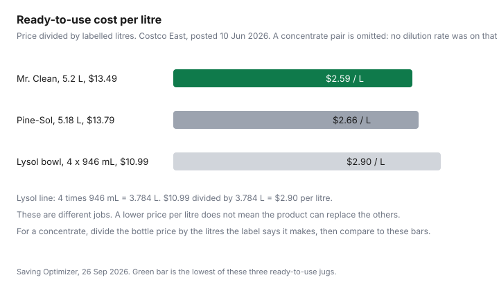

Household Items and Supplies · Canada
A Smaller Cleaning-Supply Closet: Concentrates, Refills, and What Canadian Households Can Skip
The under-sink cupboard fills up one "I'll use this" at a time. A bathroom spray, a kitchen spray, a floor jug, a wipe tub, and a second all-purpose because the first one was the wrong scent. Half of it outlasts the problem it was bought for. A smaller closet is not a personality. It is five jobs, one product each, and a rule for the rare job that still needs its own bottle.
Prices in the table are from the Costco East list posted 10 Jun 2026, and from two grocery lines opened the same week this page was written: No Name white vinegar and PC dish soap on a No Frills flyer. Usage is labelled illustrative. Nobody's real year was counted. The declutter guide is what you do with the bottles you already own. This page is what you buy next.
Disclosure: Amazon.ca storefront types, including spray bottles and microfibre cloths, are an offer type. Saving Optimizer may earn a commission if we later add a partner link. We do not currently claim an Amazon partnership. A bottle you already own is enough. Education only. Not safety advice. Follow the product label and the Health Canada pages linked below.
Key takeaways
- Five jobs: all-purpose, glass, bathroom descaler, dish soap, and a disinfectant for when you need one. A second all-purpose jug is not a sixth job.
- On the Costco East list posted 10 Jun 2026, Mr. Clean, 5.2 L at $13.49, was $2.59 per litre. Pine-Sol, 5.18 L at $13.79, was $2.66 per litre. Lysol toilet bowl cleaner, 4 times 946 mL at $10.99, was $2.90 per litre.
- No concentrate dilution rate was on that list. Do not assume a concentrate is cheaper until the label tells you how many litres it makes.
- Health Canada's bleach advisory says never mix bleach with other cleaners, including vinegar and ammonia, and not to store leftover diluted bleach. A decanted bottle needs the original warnings, and it still stays out of children's reach.
- An illustrative one-package year of seven products on that list is $110.21. An illustrative core, mixing that list with a $0.99 vinegar and a $1.00 dish soap from a Toronto No Frills flyer, is $46.46. Your cupboard will not match the illustration. The method will.
The 5-product core kit: all-purpose, glass, bathroom descaler, dish soap, and a disinfectant for when you actually need one
All-purpose is the daily hard-surface wipe: counters that are not stone, sinks, the outside of appliances, the floor if the label allows it. On the 10 Jun 2026 list, Mr. Clean all-purpose was 5.2 L at $13.49 and Pine-Sol was 5.18 L at $13.79. They are the same job at almost the same price per litre. Pick one. The other is the bottle that makes the cupboard look busy.
Glass is a separate cloth and, often, a separate liquid, because an all-purpose that leaves a film looks like a dirty window. This list did not price a glass cleaner. The DIY guide costs a vinegar-and-water spray and says where acid does not belong. A microfibre cloth and water does a lot of glass before any bottle is opened. If you buy a glass spray, it replaces the vinegar on glass. It does not sit beside three other glass sprays.
Bathroom descaler is the acid job: toilet bowls, and some hard-water film, if the label matches the surface. Lysol toilet bowl cleaner on that list was 4 times 946 mL at $10.99. Scrubbing Bubbles bathroom and shower, 4 times 708 g at $16.99, is a second bathroom product. If one of them does the bowls you actually scrub, the other waits for a reason. Do not put an acid bowl cleaner on natural stone. The DIY guide lists the surfaces.
Dish soap is the sink, and it is also a legitimate all-purpose when the label is just detergent and water. PC dishwashing liquid on the No Frills flyer for 24 to 30 Sep 2026, Darren's No Frills at 372 Pacific Ave, Toronto, was $1.00 for 638 or 739 mL. At 638 mL that is $1.57 per litre. At 739 mL it is $1.35 per litre. Kirkland dishwashing liquid on the Costco list was 2.66 L at $10.99, which is $4.13 per litre. The small PC bottle wins per litre on these two dated lines. It loses if you will not be at that No Frills and the Costco jug is the one in the cart. Dawn Platinum, 2.66 L at $14.99, is $5.64 per litre on the same Costco list. Palmolive Advanced, 4.27 L at $9.99, is $2.34 per litre. Dish soap is a unit-price decision, not a brand decision.
Disinfectant is the product you open for a job that needs a kill claim, not for every crumb. Lysol disinfecting wipes on the list were 5 packs of 110 at $19.99, after a $5.00 instant saving the list said expired 21 Jun 2026. A wipe is a disinfectant only if the label says so and you follow the contact time. Cleaning, which removes soil, is the all-purpose. The difference is the DIN section of the DIY cleaners guide. You do not need a disinfectant in the core kit every week. You need to know which bottle it is when you do.
Ready-to-use vs concentrate: dilution math and cost per litre from Canadian shelf prices
Ready-to-use cost per litre is the price divided by the litres in the jug. Mr. Clean: $13.49 divided by 5.2 is $2.59. Pine-Sol: $13.79 divided by 5.18 is $2.66. Lysol toilet bowl: 4 times 0.946 L is 3.784 L, and $10.99 divided by 3.784 is $2.90. Those are shelf litres. You use them as they come.
A concentrate is cheaper only when one bottle makes more litres than its price suggests. The formula is price divided by the litres the label says you will have after dilution. If a 1 L concentrate says it makes 10 L, and it costs $8, the diluted litre is $0.80. That $8 and that 10 L are an illustration of the formula, not a product on the 10 Jun 2026 list. No dilution rate was printed there. This page will not invent one. Photograph the back of the bottle. If the label does not say how to dilute, it is not a concentrate you can price.
Then compare the diluted litre to $2.59. If the concentrate's diluted litre is higher, the jug of Mr. Clean was the cheaper all-purpose that week. If it is lower, the concentrate wins, provided you will mix it and you will store the mix the way the label says. A concentrate that sits undiluted for a year was not a saving. It was an $8 bottle you did not open. Bona hardwood floor cleaner on the list, 3.79 L plus 946 mL at $19.97, is 4.736 L and $4.22 per litre. That is a floor product, not the all-purpose comparison. Use it in the floor row of your own note, or skip it if Mr. Clean's label already covers the floor you have.

Refill stores and bulk refill stations in Canadian cities—when the refill premium is worth it
A refill is worth it when the price per litre in your bottle beats the ready-to-use jug you would have bought, and when you will use it before you are tired of it. This draft opened store pages, not price lists. There is no refill premium, and no refill discount, in the numbers below. If a shop charges more per litre than $2.59 for an all-purpose you could have bought as Mr. Clean, you are paying for the container and the trip. That can still be what you want. It is not automatically cheaper.
Three shops had public pages on 26 Sep 2026. The Soap Dispensary and Kitchen Staples, 3718 Main Street, Vancouver, lists cleaning products and DIY ingredients. NU Grocery's locations page lists NU Main at 143 Main Street, Ottawa, K1S 5V9, and says the Wellington Street location closed in November 2022. The Ottawa homepage describes package-free shopping with your own container and lists a cleaning collection. Unboxed Market's homepage identifies a zero-waste grocery in Toronto and lists household cleaning. This is not a ranking, and it is not a claim that these are the only refill shops in Canada. If your city is not one of those three, search the city name and confirm the shop still pours cleaner before you make it the plan. A closed shop is not a unit price.
Bring a clean, dry bottle, and do not pour a new product into a bottle that still smells like the last one. The safety section is why. The Costco versus No Frills split still applies: a warehouse jug can beat a refill on litres, and a flyer bottle can beat both. The refill shop is a third tag, not a moral category.
Single-purpose products you can drop (and the few worth keeping, like oven cleaner for rare jobs)
Drop the duplicate. Pine-Sol and Mr. Clean on the same list are two all-purpose jugs. Air Wick scented oil, 9 refills at $24.99 on that list, is air care, not cleaning. Swiffer dusters, 28 refills at $24.99, and Swiffer dry cloths, 84 at $19.99 after a $5.00 instant saving the list said expired 21 Jun 2026, are tools with a refill subscription built into the handle. A microfibre cloth does not have an 84-count replacement cycle. If you already own the handle, price the refill against a cloth you can wash. If you do not own the handle, do not start.
Keep the rare tool. An oven cleaner is the usual one: you need it a few times a year, the all-purpose will not do the oven, and buying it the day you need it is fine. This list did not price an oven cleaner, so there is no cents figure. One bottle, stored with the cap it came with, is the whole category. A second bottle "as backup" is how the closet refills itself. Mr. Clean Magic Eraser, 18 at $15.99 after a $4.00 instant saving the list said expired 21 Jun 2026, is a melamine sponge, not a daily cleaner. Useful for a mark. Easy to turn into a shelf of sponges. Buy the pack when you have the mark, not when the coupon book is open.
Storage, labelling, and safety rules for decanted cleaners in homes with kids or pets
Health Canada's public advisory "Reduce your risk from toxic gases: Never mix bleach with other cleaning products," page opened 26 Sep 2026, prints a last-updated line of 2021-02-08 and an original published date of 2021-12-06. Those two dates are both on the page. The instruction does not depend on which one you trust more. Never mix any cleaning product with household bleach. Bleach reacts with ammonia, including some glass cleaners, and with acids, including vinegar. The advisory names burning eyes, light-headedness, and deaths among the effects. It also says not to store leftover diluted bleach, because you may forget the container has bleach in it. Ventilate. Use gloves and eye protection with bleach. Keep bleach and other household chemicals out of sight and reach of children. Do not clean skin with bleach.
Decanting fights that advice if the new bottle is anonymous. A spray bottle from a storefront is fine only when it carries the product name, the dilution if you diluted, and the warnings from the original label. A photo of the original label in your phone is the backup, not the only label. Child-resistant caps do not survive a move into a drinks bottle. Pets get the same rule as children: the bottle is not on the floor, and it is not a bowl. If you cannot keep the warnings, do not decant. Use the jug it came in. The DIY guide repeats the mix rule because homemade bottles are where it gets ignored.
Before/after cost table for a typical Canadian household over 12 months
"Typical" here means one package of each named product in a year, not a measured Canadian household. The before column is seven products that often share a cupboard. The after column keeps one all-purpose, one bathroom cleaner, one disinfectant, swaps glass to a litre of vinegar, and swaps dish soap to the cheaper dated bottle. If you do not need wipes this year, delete $19.99 from the after column. If you hate vinegar on glass, put your glass spray's price there instead.
| Job | Before, one package | After, one product for the job |
|---|---|---|
| All-purpose | Mr. Clean 5.2 L, $13.49, and Pine-Sol 5.18 L, $13.79 | Mr. Clean only, $13.49. $2.59 per litre. |
| Glass | No glass cleaner was priced on the Costco list | No Name vinegar, 1 L, $0.99. Dilute only where the surface allows. Not a disinfectant. |
| Bathroom | Lysol toilet bowl, $10.99, and Scrubbing Bubbles, $16.99 | Lysol toilet bowl only, $10.99, if that is the surface you scrub. |
| Dish soap | Dawn Platinum 2.66 L, $14.99 | PC dish soap, $1.00, on the dated No Frills line. Kirkland was $10.99 for 2.66 L if that is the store you are in. |
| Disinfectant | Lysol wipes, $19.99 | The same $19.99, opened when the job needs it, not every day. |
| Floor specialty | Bona, 3.79 L plus 946 mL, $19.97 | Dropped in this illustration unless the floor's care sheet requires it. |
| Package total | $110.21 | $46.46 using Mr. Clean, vinegar, Lysol bowl, PC dish soap, and the wipes. |
$110.21 minus $46.46 is $63.75 in this illustration. It is not your saving until your list matches these packages. A household that already owned one all-purpose and never bought Bona does not get to claim the Bona line. Subscribe and Save can reorder the one jug you kept. It should not reorder the six you dropped.
Sources & date stamps
- Costco East list, posted 10 Jun 2026: Mr. Clean 5.2 L $13.49; Pine-Sol 5.18 L $13.79; Lysol toilet bowl 4 times 946 mL $10.99; Scrubbing Bubbles 4 times 708 g $16.99; Lysol wipes 5 times 110, $19.99 after a $5.00 instant saving the list said expired 21 Jun 2026; Dawn Platinum 2.66 L $14.99; Palmolive Advanced 4.27 L $9.99; Kirkland dish liquid 2.66 L $10.99; Bona 3.79 L plus 946 mL $19.97; Air Wick 9 refills $24.99; Swiffer dusters 28, $24.99; Swiffer dry cloths 84, $19.99 after a $5.00 instant saving the list said expired 21 Jun 2026; Mr. Clean Magic Eraser 18, $15.99 after a $4.00 instant saving the list said expired 21 Jun 2026. Opened 26 Sep 2026.
- No Frills flyer page, 24 to 30 Sep 2026, Darren's No Frills, 372 Pacific Ave, Toronto: No Name pure white vinegar, 1 L, $0.99; PC dishwashing liquid, 638 or 739 mL, $1.00.
- Health Canada public advisory RA-62070, opened 26 Sep 2026. The page prints last updated 2021-02-08 and original published date 2021-12-06. Never mix bleach with other cleaners. Do not store leftover diluted bleach. Keep chemicals out of children's reach.
- Store pages opened 26 Sep 2026: The Soap Dispensary, 3718 Main Street, Vancouver; NU Grocery locations page, 143 Main Street, Ottawa, Wellington location closed November 2022; Unboxed Market homepage, Toronto, household cleaning listed. No refill prices were on those pages as captured.
Frequently asked questions
What cleaning products does a household actually need?
A workable core is one all-purpose cleaner, one glass cleaner, one bathroom descaler, one dish soap, and a disinfectant you use when the job is actually disinfection. The Costco East list posted 10 Jun 2026 priced several of those jobs. It also priced second and third versions of the same job. The second jug is the one the closet does not need.
Are concentrates really cheaper than ready-to-use sprays?
They are cheaper only after you divide the bottle price by the litres the label says it makes. On the 10 Jun 2026 list, Mr. Clean was $2.59 per litre ready to use and Pine-Sol was $2.66 per litre. No dilution rate was printed on that list, so this page does not invent a concentrate price. Read the label, do the division, and compare to those litres.
Are refill stores worth it?
Worth it when the price per litre you take home beats the ready-to-use jug, and you will finish it. This draft did not open a refill price, so it does not claim a premium or a discount. Shops that were open on 26 Sep 2026 include The Soap Dispensary on Main Street in Vancouver, NU Grocery on Main Street in Ottawa, and Unboxed Market in Toronto. That is a location check, not a ranking.
Is it safe to decant cleaners into other bottles?
Health Canada's public advisory says to read the label, never mix bleach with other cleaners, and not to store leftover diluted bleach for later because you may forget it is bleach. A jam jar does not keep a child-resistant cap or the warnings. If you move a product, copy the name and the warnings onto the new bottle and keep a photo of the original label. Keep it out of reach of children.
Which single-purpose cleaners are worth keeping?
Keep a product you use for a job the core kit does not do, such as an oven cleaner for the rare oven, and then keep one, not a shelf of them. Air-care refills, a second all-purpose scent, and a stack of wipes you do not open are the usual extras. On the 10 Jun 2026 list, Pine-Sol and Mr. Clean were both all-purpose jugs. One of them covers that job.